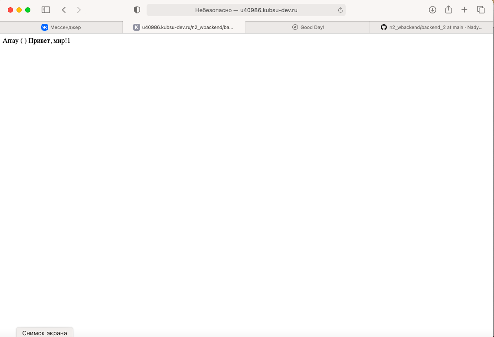
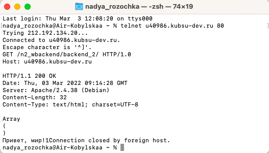
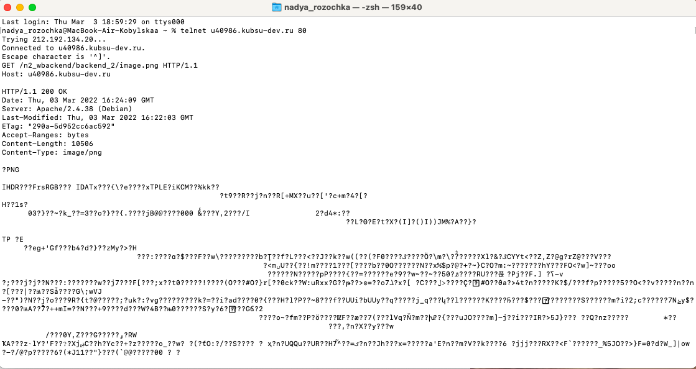
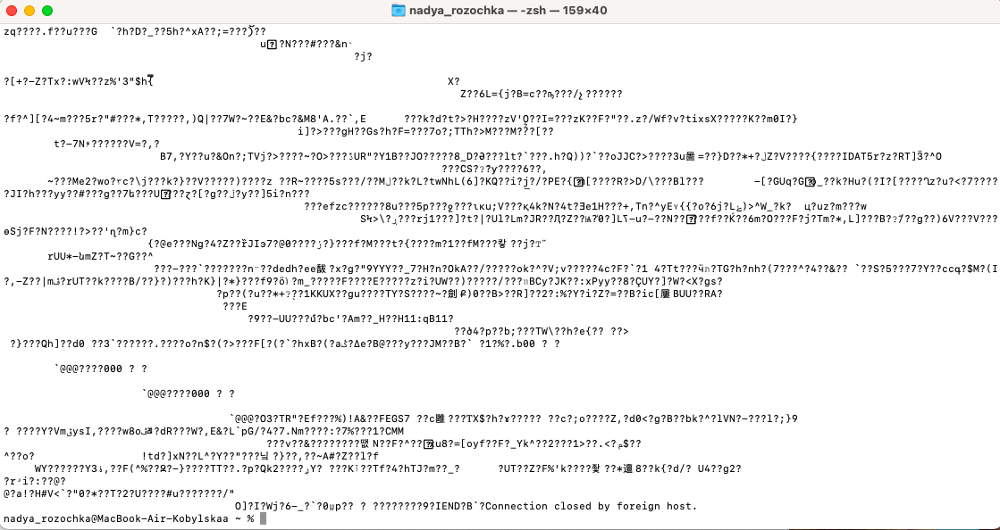
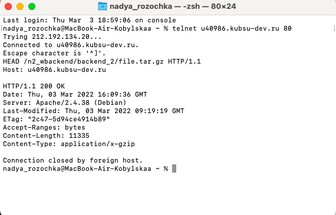
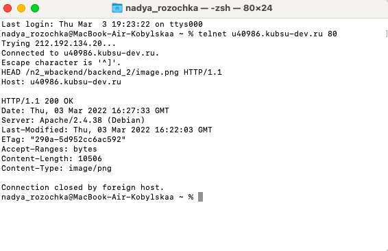
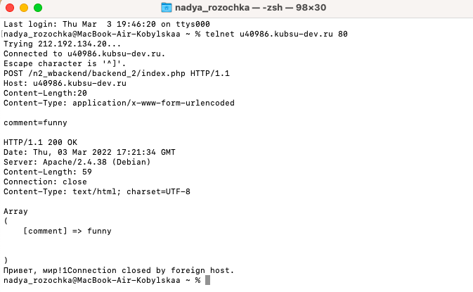
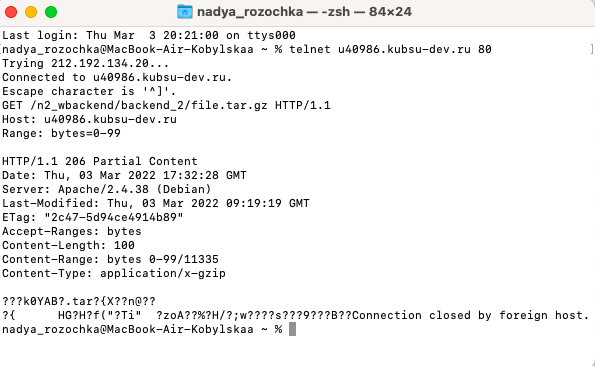
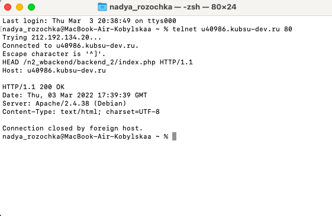

Задание 2
| Если загрузить файл на git и клонировать свой репозиторий, а затем зайти на свой сервер по ссылки "u40986.kubsu-dev.ru/n2_wbackend/backend_2", то мы увидим, что всё работает:) |
|  |
| 1) Подключение "Telnet".
С помощью утилиты командной строки в macOS "Homebrew",
которая позволяет устанавливать пакеты и приложения, мы установили пакет "Telnet".
Установили "Homebrew" через теминал, благодаря специальной ссылки.
Чтобы подключится к серверу "u40986.kubsu-dev.ru" по протоколу "telnet" в утилите "Terminal",
используется команда:
"telnet u40986.kubsu-dev.ru 80" (TCP-порт 80, который используется для незашифрованного трафика HTTP) После этой команды произошло соединение с сервером. Далее записываем следующую команду "GET", указываем веб-страницу и протокол "HTTP/1.0" (HTTP/1.0 – текстовый протокол, с помощью которого взаимодействуют клиент, например, браузер и сервер. Работает это так. Пользователь шлёт определенный запрос на сервер, запрашивая или передавая нужные данные, а сервер, в зависимости от запроса, выполняет нужную логику и возвращает результат, обычно это HTML-страница) и на следующей строчки указываем наш Host. В результате мы получаем некоторые характеристики и код веб-сайта, который мы указывали. |
|  |
| 2)Метод GET в HTTP используется для получения информации от сервера по заданному URI (URI в HTTP). Запросы клиентов, использующие метод GET должны получать только данные и не должны никак влиять на эти данные. Часто бывает так, что HTTP метод GET обращается к какому-то коду, а не к конкретной страницы (все CMS генерируют контент налету), поэтому метод GET работает так, что мы получаем не исходный код, который генерирует текст, а сам текст. HTTP/1.1 - в нём все запросы и ответы хранятся в простом текстовом формате. Мы получили внутреннюю страницу методом GET в протоколе HTTP/1.1 . |
|  |
|  |
| 3) Нужно было определить размер файла "file.tar.gz", не скачивая его.
Размер файла отправляется как заголовок "Content-Length". В нашем случае размер файла равен
"11335 bytes".
HTTP метод HEAD работает точно так же, как и метод GET, с той лишь разницей, что сервер в ответ не посылает тело HTTP сообщения. Все заголовки ответа при запросе клиента с использованием метода HEAD идентичны тем заголовкам, которые бы были, если бы использовался метод GET. Обычно HTTP метод HEAD используется для получения метаинформации об объекте без пересылки тела HTTP сообщения. Метод HEAD часто используется для тестирования HTTP соединений и достижимости узлов и ресурсов, так как нет необходимости гонять по сети содержимое, тестирование HTTP методом HEAD производится гораздо быстрее. |
|  |
| 4) Internet Media Types, также MIME-типы — типы данных, которые могут быть переданы посредством сети Интернет с применением стандарта MIME. MIME-типы указываются в так называемом заголовке (HTTP header) - Content-Type. В нашем случае ресурс имеет MIME-тип "image/png". |
|  |
| 5) HTTP метод POST является вторым по использованию в Интернете
и нужен для того, чтобы отправлять данные на сервер. HTTP метод POST позволяет отправлять
данные на сервер. Разработчики ввели метод POST в HTTP стандарт, чтобы клиенты могли:
оставлять сообщения на различных Интернет-ресурсах; передавать информацию о себе, заполняя HTML формы; То, как будет работать метод POST определяется исключительно на стороне сервера и обычно зависит от запрашиваемого URI. Если сравнить URI, которому обращается клиент и сообщение, которое он хочет отправить с файловой системой, то URI – это папка, а сообщение клиента – это файл, который лежит в папке. Когда веб-браузер отправляет POST-запрос с элементами веб-формы, по умолчанию интернет-тип данных медиа — application/x-www-form-urlencoded. |
|  |
| 6) Получили первые 100 байт файла "file.tar.gz". Мы доопределили значение "Range: bytes=0-99". HTTP Заголовок ответа Accept-Ranges - это маркер, который использует сервер, чтобы уведомить клиента о поддержке "запросов по кускам" |
|  |
| 7) Кодировка ресурса "index.php" - charset=UTF-8. |
|  |
| Метод GET запрашивает представление ресурса. Запросы с использованием этого метода могут только извлекать данные. HEAD запрашивает ресурс так же, как и метод GET, но без тела ответа. POST используется для отправки сущностей к определённому ресурсу. |